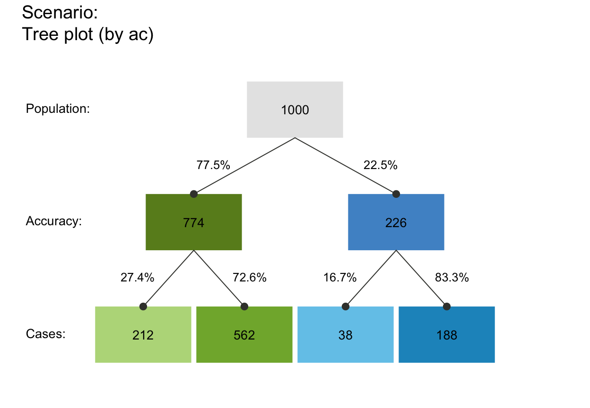
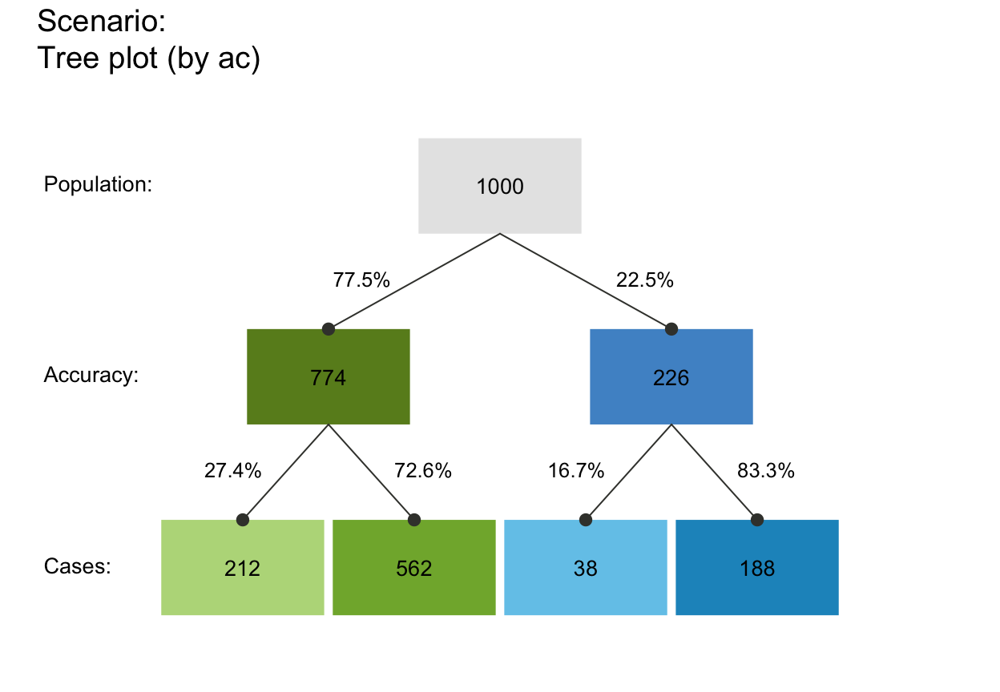

plot_tree drew a tree diagram of
frequencies (as nodes) and probabilities (as edges).
Usage
plot_tree(
prev = num$prev,
sens = num$sens,
mirt = NA,
spec = num$spec,
fart = NA,
N = freq$N,
round = TRUE,
by = "cd",
area = "no",
p_lbl = "num",
show_accu = TRUE,
w_acc = 0.5,
title_lbl = txt$scen_lbl,
popu_lbl = txt$popu_lbl,
cond_true_lbl = txt$cond_true_lbl,
cond_false_lbl = txt$cond_false_lbl,
dec_pos_lbl = txt$dec_pos_lbl,
dec_neg_lbl = txt$dec_neg_lbl,
hi_lbl = txt$hi_lbl,
mi_lbl = txt$mi_lbl,
fa_lbl = txt$fa_lbl,
cr_lbl = txt$cr_lbl,
col_txt = grey(0.01, alpha = 0.99),
cex_lbl = 0.85,
col_boxes = pal,
col_border = grey(0.33, alpha = 0.99),
lwd = 1.5,
box_lwd = 1.5,
col_shadow = grey(0.11, alpha = 0.99),
cex_shadow = 0
)Arguments
- prev
The condition's prevalence
prev.- sens
The decision's sensitivity
sens.- mirt
The decision's miss rate
mirt.- spec
The decision's specificity value
spec.- fart
The decision's false alarm rate
fart.- N
The number of individuals in the population.
- round
A Boolean option specifying whether computed frequencies are rounded to integers. Default:
round = TRUE.- by
A character code specifying the perspective (or category by which the population is split into subsets) with 3 options:
"cd"... by condition;"dc"... by decision;"ac"... by accuracy.
- area
A character code specifying the area of the boxes (or their relative sizes) with 3 options:
"no"... all boxes are shown with the same size;"sq"... boxes are squares with area sizes scaled proportional to frequencies (default);"hr"... boxes are horizontal rectangles with area sizes scaled proportional to frequencies.
- p_lbl
A character code specifying the type of probability information (on edges) with 4 options:
"nam"... names of probabilities;"num"... numeric values of probabilities (rounded to 3 decimals, default);"mix"... names of essential probabilities, values of complements;"min"... minimal labels: names of essential probabilities.
- show_accu
Option for showing current accuracy metrics
accuon the margin of the plot.- w_acc
Weighting parameter
wused to compute weighted accuracyw_accincomp_accu_freq.Various other options allow the customization of text labels and colors:
- title_lbl
Text label for current plot title.
- popu_lbl
Text label for current population
popu.- cond_true_lbl
Text label for current cases of
cond_true.- cond_false_lbl
Text label for current cases of
cond_false.- dec_pos_lbl
Text label for current cases of
dec_pos.- dec_neg_lbl
Text label for current cases of
dec_neg.- hi_lbl
Text label for hits
hi.- mi_lbl
Text label for misses
mi.- fa_lbl
Text label for false alarms
fa.- cr_lbl
Text label for correct rejections
cr.- col_txt
Color for text labels (in boxes).
- cex_lbl
Scaling factor for text labels (in boxes and on arrows).
- col_boxes
Colors of boxes (a single color or a vector with named colors matching the number of current boxes). Default: Current color information contained in
pal.- col_border
Color of borders. Default:
col_border = grey(.33, alpha = .99).- lwd
Width of arrows.
- box_lwd
Width of boxes.
- col_shadow
Color of box shadows. Default:
col_shadow = grey(.11, alpha = .99).- cex_shadow
Scaling factor of shadows (values > 0 showing shadows). Default:
cex_shadow = 0.
Details
plot_tree is deprecated – please use plot_prism instead.
See also
plot_prism is the new version of this function.
Other visualization functions:
plot.riskyr(),
plot_area(),
plot_bar(),
plot_crisk(),
plot_curve(),
plot_fnet(),
plot_icons(),
plot_mosaic(),
plot_plane(),
plot_prism(),
plot_tab()
Examples
plot_tree() # frequency tree with current default options (by = "cd")
#> Function 'plot_tree' is deprecated; using 'plot_prism' (with by = 'cd'/'dc'/'ac') instead.
#> Argument 'title_lbl' is deprecated. Please use 'main' instead.
# alternative perspectives:
plot_tree(by = "dc") # tree by decision
#> Function 'plot_tree' is deprecated; using 'plot_prism' (with by = 'cd'/'dc'/'ac') instead.
#> Argument 'title_lbl' is deprecated. Please use 'main' instead.
 plot_tree(by = "ac") # tree by accuracy
#> Function 'plot_tree' is deprecated; using 'plot_prism' (with by = 'cd'/'dc'/'ac') instead.
#> Argument 'title_lbl' is deprecated. Please use 'main' instead.

# See plot_prism for details and additional options.
plot_tree(by = "ac") # tree by accuracy
#> Function 'plot_tree' is deprecated; using 'plot_prism' (with by = 'cd'/'dc'/'ac') instead.
#> Argument 'title_lbl' is deprecated. Please use 'main' instead.

# See plot_prism for details and additional options.